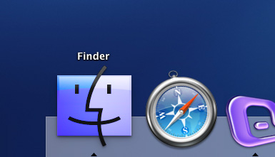
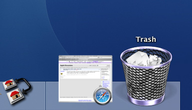
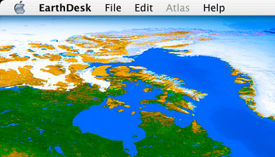
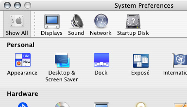

OS X display issue
vrijdag 5 maart 2004 | Apple
I am experiencing heavy color distortions on my brand new Powermac dual 1.8 G5. Pictures look oversaturated in Preview and Photoshop and certain OS X interface elements, such as the dock icon and the trashcan, are almost fluorescent (purple, hue, blueish). I have the ATI 9600 videocard and a 19'' IIyama Vision Master Pro 454 CRT monitor.
The problem occurred from day one on my new system. I tried reinstalling Panther, both from the standard 10.3 disks and from the DVD that came with my G5. I always performed a clean install to make sure nothing kept lingering around from any previous installation.
Changing the color profile in the Monitor settings (System Preferences) from the monitor-related profile to “Adobe RGB (1998)” did help a lot (you must reboot before you see the changes). Pictures and video look OK again, but some icons (Finder, Trash) and some programs (Entourage, Earthdesk, ...) still have distorted colors.
The problem is almost certainly caused by a bad setting in the user folder. When I create a new user, everything looks OK in that account. I tried deleting every file in my user folder that could have something to do with colors and displays. I also cleared out my caches folder with Panther Cache Cleaner, as suggested in one of the Macfixit reports below. Nothing helped.
I seem to be stuck. Help!
Update (March, 9): The solution (sort of...)
I tried the solutions posted on Macfixit. They all failed. Then I tried yet another reinstall of the system. This is how I did it... I unplugged my screen while Panther booted after the first part of the installation. When I heard the welcome-music playing, I plugged it back in. The result was that I had to complete the installation and registration in a 640*480 resolution. When Panther installation had completely finished, I switched to a higher resolution, put the Color profile to sRGB and... everything looked normal! Eureka!
Seems like Panther loads a corrupt driver for the screen (19inch IIyama Vision Master Pro 454 CRT) during install which you cannot unload afterwards.
Strange thing is: on a 'corrupted' OS X, in a new user account, everything looks normal too! The bad driver/setting must therefor be somewhere in the user-folder, but where?! This mystery remains yet unsolved.
Update II (April, 3)
I noticed that my previously posted solution is not complete. Before reinstalling, one should reset the PRAM of the Mac in order to clear all information left behind on the Mac about your display hardware (not on the harddrive!). You can rest the PRAM by pressing CMD, Option, P and R during the boot process. Follow these steps:
- Backup your data
- Reboot using your Panther installation disk
- Erase your disk
- Reboot by quitting the installer and press CMD, Option, P, R. Keep these keys pressed down until you've heard the startup chime three times. During this process you won't see anything appear on your screen.
- Reboot again, using the installation disk. If your PRAM is reset correctly, the installation software will display in a low resolution like 640x480.
- Follow on-screen instructions, but unplug your screen from your graphic card when you have to reboot. Wait untill you hear the welcome music of the installation. It is now save to plug your screen back in.
- After the installation, go the the Pref pane and change your display color profile to sRGB.
- That's it!
Related links
Other users are reporting the same problem. It occurs not only on G5 machines, but also on G4's with both ATI and NVidia graphic cards.
- Macfixit: Incorrect colors in Mac OS X 10.3
- Macfixit: Incorrect colors in Mac OS X 10.3.x: More solutions
- Apple discussions: Video issue
- This article on Apple discussions
Screenshots of the color distortion

Click here to see how this is supposed to look like.


Click here to see how this is supposed to look like.


Click here to see how this is supposed to look like.


Click here to see how this is supposed to look like.

Mauro Notarianni - Italy op 8 maart 2004
Maybe you pressed a keyboard shortcuts to enable “Universal Access” different color scheme. Check in System Preferences -> Universal Access if you change to default color of the system.